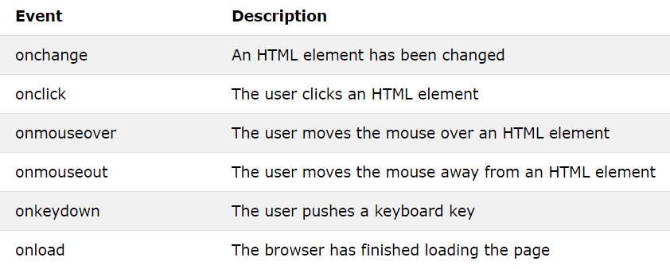

브라우저 - 우클릭 - 검사 - element (= 태그)
* 자바스크립트의 시작을 알리는 코드
* 버튼을 눌렀을 때 경고창이 뜨게?
* onclick="자바 스크립트 "
- onclick 속성 값은 웹이 기억하고 있다가 "사용자가 클릭하면 그때 실행해야지."라고 대기하다가 클릭하면 실행
- 이벤트 (Event): 웹브라우저에서 일어나는 일.
- 이벤트가 일어났을때 JS가 실행됨. 이 경우엔 '클릭'이 이벤트가 됨.

더 많은 이벤트
*콘솔(console)
-지금까진 자바스크립트를 위해 페이지를 만들었지 코드실행해야하는 가벼운 상황에서는 콘솔 사용하면 편함
- 브라우저 - 검사 - console
- 문자의 개수? alert('~~~~~~~'.length)
- 콘솔에서 실행시키는 자바스크립트는 내가 보고있는 웹페이지를 대상으로 실행
- 콘솔에서 실행했던 코드를 다시 입력하고 싶다면 복붙 해도 되지만 위쪽 방향키 ↑ 누르면 다시 나타남.